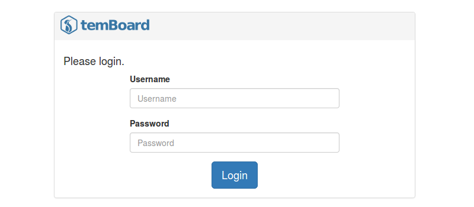
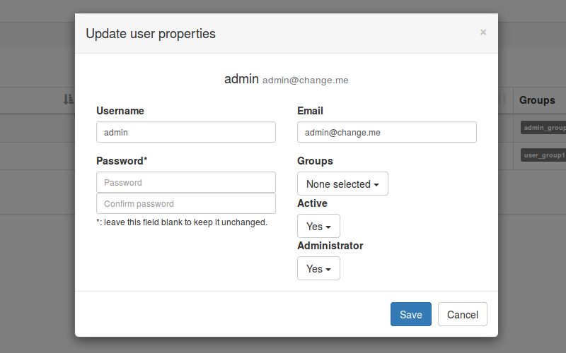
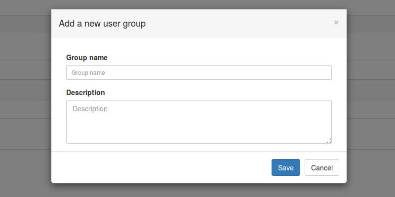
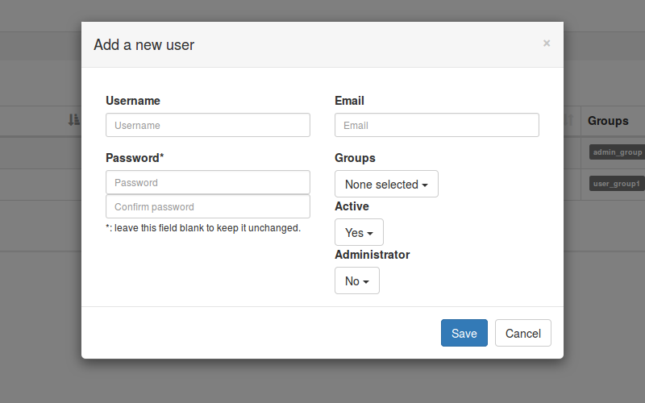
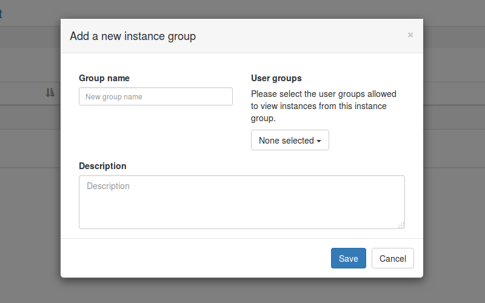
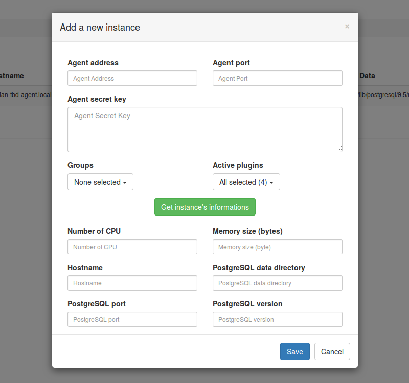

temBoard UI howto
First connection
Once temboard is up and running, it's time to try a first connection to the web interface with a web browser using https at the address https://<temboard-host>:8888/.

You should get a login box. The default administration account is admin, the password is admin. Obviously, this password MUST be changed as soon as possible. To edit user's profile, please login and go to Manage -> User list then Edit on the corresponding row.

Currently, when a logged in user changes its password, the error message Restricted area... is raised, this behaviour is due to the expiration of user session when the password has been changed. Go back to the login page and fill the form with the new password.
User and user group creation
User acces controls to instances managed by temboard are based on group belonging. Each instance can belong to N instance group, each user can belong to N user group. Each user group is granted or not to acces an instance group.
You must be logged in with a user having administration privileges to manage users.
User group creation
Go to Manage-> User groups, then + Add a new user group. Please fill the form and Save.

User group attributes
Groupe name: Groupe name, must be unique;Description: Group description.
User creation
To add a new user, go to Manage -> Users, then + Add a new user.

User attributes
Username: User name used for login, must be unique;Password: User password;Email: User email address;Groups:user groupslist the user belongs to;Active: Is the user active or not, if not he won't be able to login;Administrator: Does the user get administration rights to create other users, instances etc..
Add a new instance
You must be logged in with a user having administration privileges.
Create a new instance group
To create a new instance group, go to Manage -> Instance groups, then + Add a new instance group.

Instance group attributes
Group name: Groupe name, must be unique;Description: Groupe description;User Groups: List ofuser groupallowed to accesinstancesfrom thisinstance group.
Create a new instance
Agent setup
Before adding a new instance in temboard interface, you'd check that temboard-agent is up & running on the machine hosting the PostgreSQL instance.
A quick smoke test can be done using curl from temboard machine:
temboard$ curl https://<temboard-agent-address>:2345/discover
{"hostname": "debian-tbd-agent.local", "pg_data": "/var/lib/postgresql/9.5/main", "pg_port": 5432, "plugins": ["supervision", "dashboard", "settings", "administration", "activity"], "memory_size": 518451200, "pg_version": "PostgreSQL 9.5.4 on x86_64-pc-linux-gnu, compiled by gcc (Debian 4.9.2-10) 4.9.2, 64-bit", "cpu": 1}
supervision plugin
The supervision plugin from temboarg-agent is in charge to collect system and PostgreSQL metrics about the host is running on. Periodicaly, these data (JSON object) are sent to temboard using an https API. To allow this data flow, a key must be built and shared between temboard and the temboard-agent.
- On the agent side, the key has to be set in
temboard-agent.conffile, under the[temboard]section, the parameter iskey. Configuration must be reloaed. - On
temboardUI side, you have to edit the correspondinginstanceand set the same key inAgent keyfield.
See doc/temboard-agent-configuration.md for more information.
Agent users
In order to use most of the plugins, one or more user must be added to each tembaord-agent. Once the temboard-agent is well configured, you can use the script temboard-agent-adduser to create a new user:
temboard-agent$ sudo -u postgres temboard-agent-adduser
Username: john
Password:
Retype password:
Done.
Testing login with this new user can be done using curl tool:
temboard-agent$ curl -k -X POST --data '{"username": "john", "password": "xxxxx"}' https://127.0.0.1:2345/login
{"session": "fe43c3973ec7ca0fc219c00588c97c39afc06fcf91ee1203d19a892466600dae"}
Add a new instance
There are two ways for adding a new instance in Temboard UI:
* using the UI itself and its online form;
* using the script temboard-agent-register from the host running the agent.
From the UI
Go to Manage -> Instances, then + Add a new instance.

Instance attributes
Agent address: IPv4 address that the agent is listening on;Agent port: Port number that the agent is listening on;Agent secret key: Authentication key used by the agent to send data to the collector (supervisionplugin only);Groups: Instance groups this instance belongs to.Active plugins:pluginsenabled for this instance. Selectedpluginsmust be loaded by theagenttoo.
Once Agent address and Agent port filled, if the agent is up & running, it's possible to retreive values of the following attributes by clicking on the button Get instance's informations.
Number of CPU: Number of CPU/vCPU;Memory size: Memory size in bytes;Hostname: Machine hostname, FQDN. Must be unique.PostgreSQL data directoryPostgreSQL portPostgreSQL version
From the command line with temboard-agent-register
This script tries to ease instance/agent registration to Temboard UI.
Requirements:
* having an agent configured;
* temboard-agent must be running;
* having an HTTPS flow open between the host running the agent and the host running the UI (default port: 8888);
* having a user with admin. rights to Temboard UI.
temboard-agent-register should be executed from the host running the agent we want to register and works following these steps:
- Agent configuration loading;
- Data collection about the environnement, using agent's /discover API;
- Login to the UI;
- Send collected data about the instance/agent to the UI for registration.
Usage:
Usage: temboard-agent-register [options] <https-temboard-ui-address>
Register a couple PostgreSQL instance/agent to a Temboard UI.
Options:
-c CONFIGFILE, --config=CONFIGFILE
Configuration file. Default: /etc/temboard-agent
/temboard-agent.conf
-h HOST, --host=HOST Agent address. Default: localhost
-p PORT, --port=PORT Agent port. Default: 2345
-g GROUPS, --groups=GROUPS
Instance groups list, comma separated. Default: none
--help Show this help message and exit.
Exemple:
temboard-agent-register --groups=instance_group https://ui.temboard.local:8888